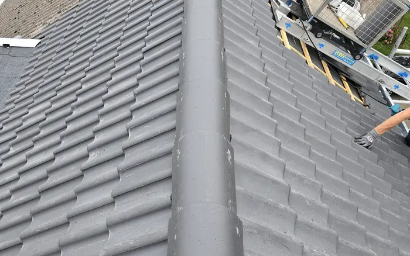
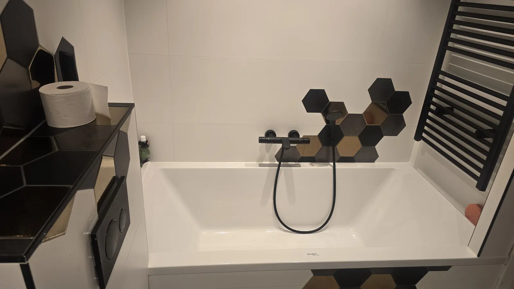
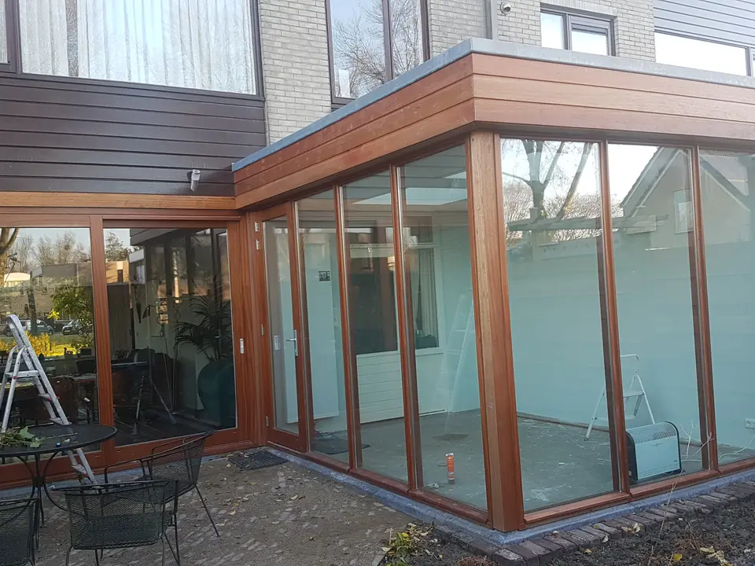
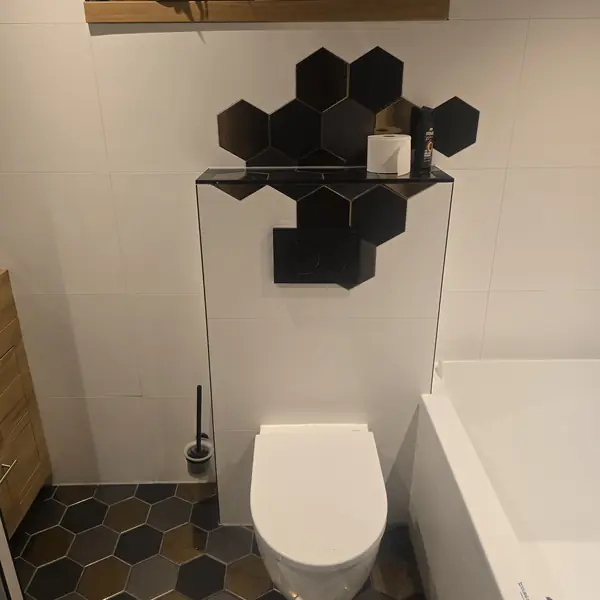
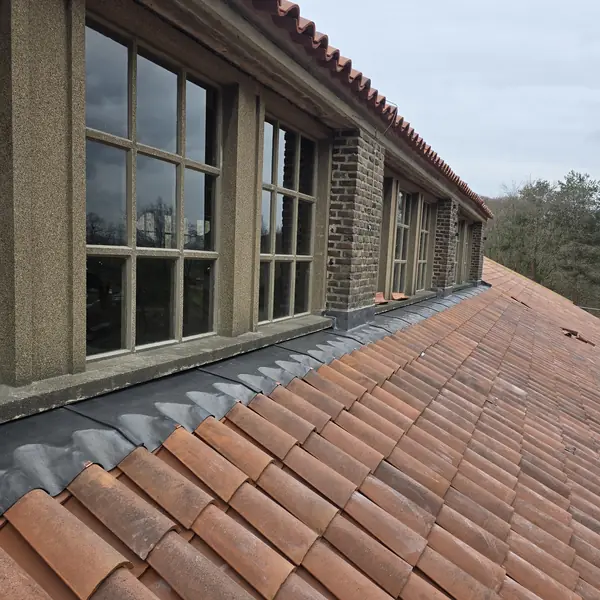
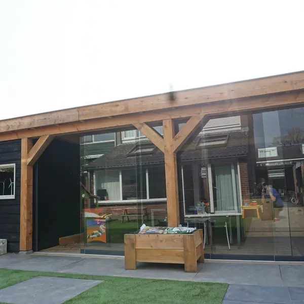
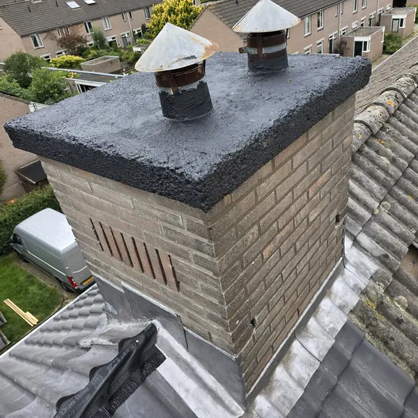
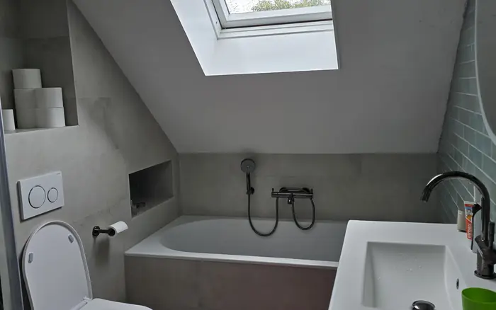
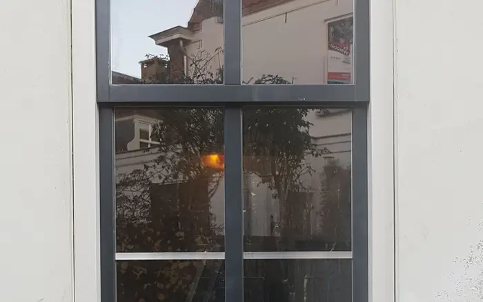

Onderhoud
Dak en dakpannen, zink en goten, leidingen, houtrot, kozijnen en bestrating.

Onderhoud · Renovatie · Verbetering · Meerwaarde
Meck Bouw is Martin van Eck: één vakman die bijna alle werkzaamheden in huis zelf beheerst. Zo kan er achter elkaar door worden gewerkt.
Tien vakken, één balk
Eigen foto's van Martin, van daken en goten tot badkamers, trappen en een aanbouw.





Zoals Meck Bouw het zelf indeelt: onderhoud, renovatie, verbetering en meerwaarde.

Dak en dakpannen, zink en goten, leidingen, houtrot, kozijnen en bestrating.


Beter glas, ramen vervangen, screens en isolatie van dak, wand en vloer.

Dakkapel, uitbouw of aanbouw, en tuinwerk zoals schutting, schuur en overkapping.
"We hebben Martin van MeckBouw de afgelopen jaren meermalen gevraagd om renovatie en verbouwprojecten in onze oude stadsboerderij te doen. Omdat hier niets recht is in huis moet er altijd geïmproviseerd worden. Dat kan Martin als geen ander. Hij werkt rustig, secuur en met zeer veel kennis van zaken. Of het nou een zinken dakgoot vervangen is, een hele verdieping strippen en opnieuw opbouwen, keuken plaatsen, houtrot repareren, luiken maken, ramen vervangen, douche aanpassen. Hij kan alles en doet dat goed. Zeer aan te bevelen. Plan wel goed van tevoren want hij heeft het soms behoorlijk druk. Monica en Willem"
"Martin heeft bij mij twee toiletten en een badkamer gerenoveerd. Geweldig gedaan, heel netjes gewerkt, ze zien er uit als nieuw. Ik ben super blij. Zal hem zeker voor een volgende klus vragen."
Bel, mail of vul de klusbon in. Martin denkt met u mee.